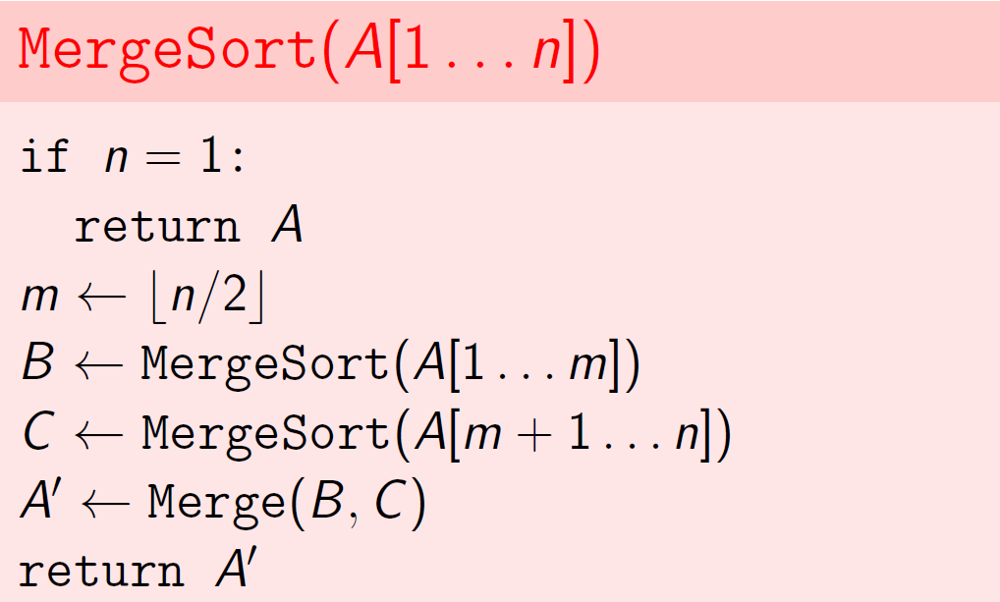
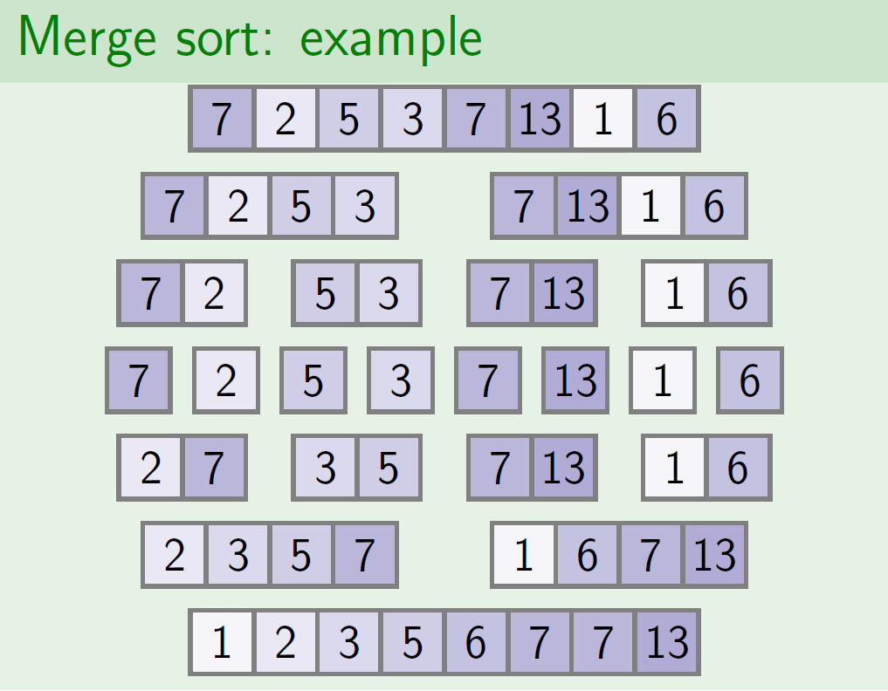
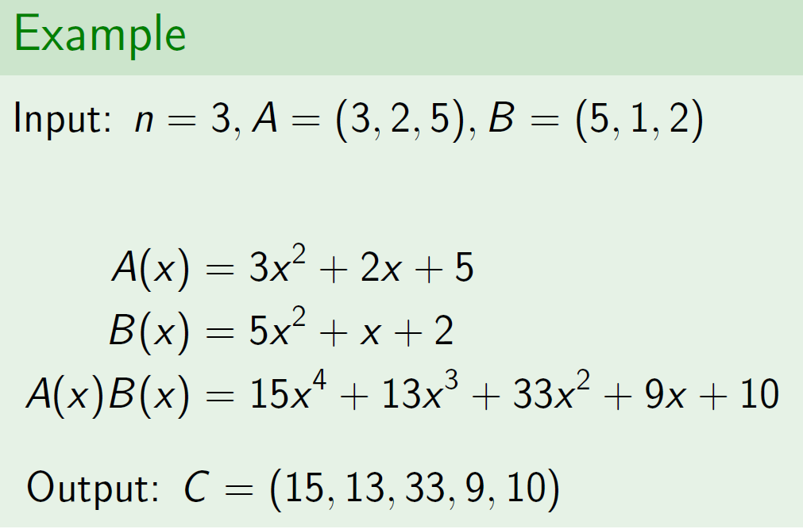
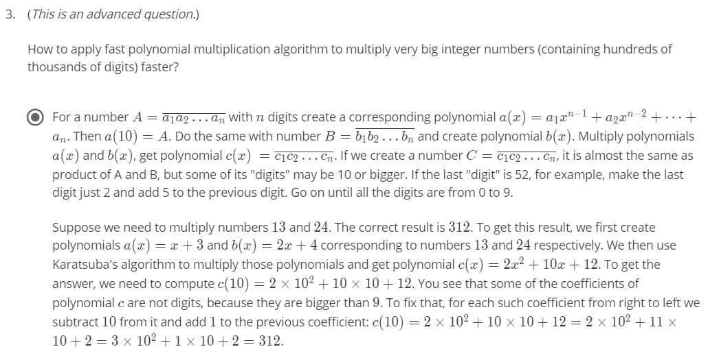
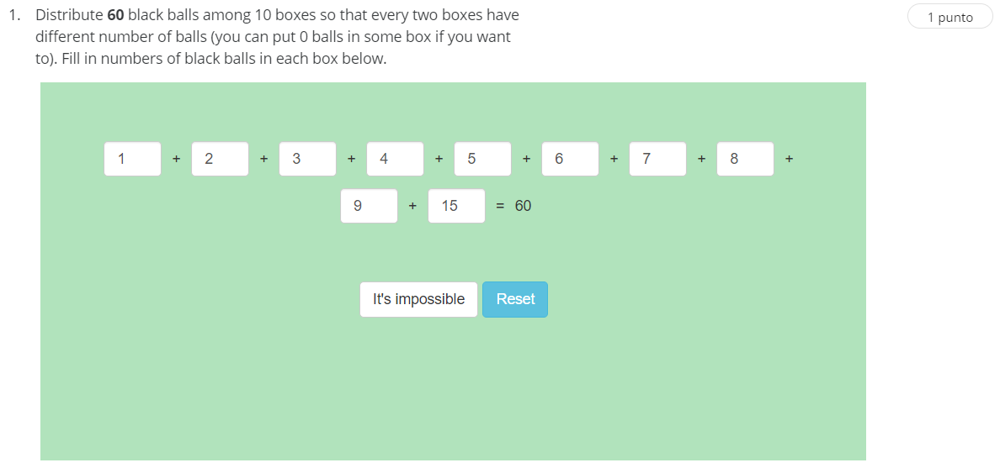
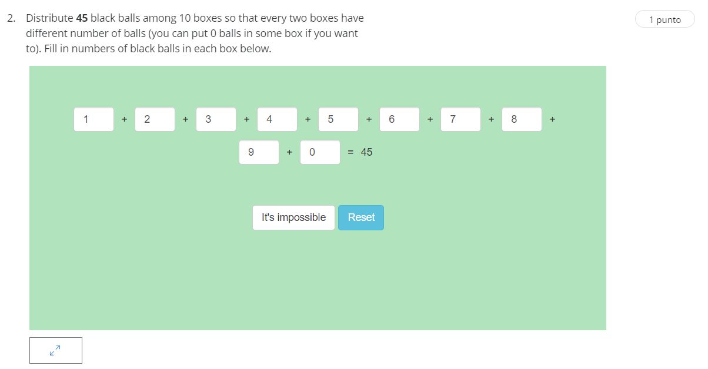

Quick Sort
OverView
Quick Sort is another kind of sorting algorithm but this is a special one, because we are not bounding our running-time in the worst-case but on the average-case.
The main idea of this algorithm is to split our array taking into account a pivot, this pivot is selected firstly in a naive way giving us in the worst case a running-time of O(n^2). But if we handle an array which all the elements are differents we achieve an average running-time of O(nlog(n)).
The core of this algorithm is on the split of two sub-arrays, we can select our pivot as the first element in our array, then we need to move 2 indexes which each one tell us the ending of each partition, at the end of the scan we swap our pivot with the last item indexed at position j that mean that all elements before that position are that element o less.
An easy implementation of this algorithm is show below:
The ideal array used in this algorithm is one with all diferents elements and balance partitions in each iteration, but this is not always possible in certain situations, so, we have said that in the worst-case this running-time algorithm is O(n^2) and getting unbalaced partitions we obtain this runtime.
Insted of balance partition where each subdivision of the array is nearly to the half, when this occurs we can say our running-time is nearly to O(nlog(n)) because the recurrence of the problem is nearly the half on each iteration.
So one way to solve unbalance partitions is getting random pivots, we select a random pivot, then swapping them anf finally making the partition again.
Another incovenient handling with unbalanced partitions are equal elements if we have a great quantity of equal elements our running-time could be harm getting a bad O(n^2). To avoid this destiny we are not only spliting our array into 2 sub-arrays but in 3 sub-array where the middle one are all the elements equal to our pivot and the contigous sub-arrays are greate or less strictily in each case.
We can see a representation below:
Finally our algorithm is the next one:
But we dont finish here, we can improve our algorithm even more, we can improve our space-requirement and this is achieved by eliminating the half of the recursion needed, we call this a tail recursion elimination.
But unfortunatly our algorithm is not always the best in all situations, we need that our algorithm always give us the best performance no matter the input we give it, so we create a kind of branch of this algorithm and it is called Intro Sort.
Basically, we are selecting our sort algorithm based on our requirements if our array is nearly to a random distribution, a sorting algorithm like quick sort is the best one, if we are handling wich outliers arrays we can use another type of algorithm like heap-sort which is anoter O(nlogn) sorting algorithm.
Sorting Problem
Problem Statement
Given an unsorted array, we need to return a permutation of the array where each of the elements inside arrays are ordered. Sorting data is an important step of many efficient algoritims. Sorted data allows for more efficient queries.
Selection Sort
The first naive algorithm is called Selection-Sort , with this algorithm we are scanning all the array searching the minimum value and after that we swap it with the first element in the array, then we forgot that element and do the same with the remaining part.
This algorithm being naive is slow in its running-time, because we need to compare each element with the rest of the elements giving us a running-time of O(n^2). Addionaly, the are other quadratic time sorting algorithms like insertion sort, bubble sort.
Merge Sort
Merge sort is a compare-based algorithm but implemented in a efficient way with this algorithm we directly apply a divide and conquer algorithm. We started splitting our array into two subarrays with the same size and until we got two arrays of size 1 then we compare to a contigous array size and swap it if necessary.
Merging two sorted array in a merge sort is the core of the algorithm, because we create a new array with size p+q where p and q are the sizes of the arrays sorted, then we start comparing the first element of each array and move it to the new array until we got sorted both of two arrays in a new bigger one.
Since we are talking about a divide-and-conquer algorithm we can represent the work of the algorithm in a tree representation where we can look al the work done by each step.
The runtime of Merge Sort is O(n log(n)) as we can see at the bottom of the tree. If we separated the work done, the work done by merging two arrays is O(n) and hence the running time of MergeSort satisfies a recurrence T(n)<= 2T(n/2) + O(n)
Lower Bound for Comparison Based Sorting
A comparison based sorting algorithm sorts objects by comparing pairs of them. This is true because we need at least to compare an element in a direct or indirect way.
Counting Sort
Counting Sort is a special type of algorithm where we do not need to compare each elements with someone in the array, instead we get some knowledger a priori, for example, our array is feeded by small integers in a certain range. Therefore the only thing we need to do is a linear scan on the array counting the ocurrences of each integer.
After counting all the elements inside the array we can create a new array filling each space with ocurrences got by the linear scan.
Summary
Week 4 - Master Theorem
Here's what I do. When I have a recurrence of this rough form, I look at the amount of work done at the first level and at the second level (which is a very easy calculation) and then I just say to myself Is that the same amount of work? If it's the same amount of work it's going to be the same amount of work all the way down and so we're going to be in case two. So it's going to be the amount of work at the first level, which we known is O(n to the d), times log n because there are that many levels. On the other hand, if the first term is larger than the second term I know the first term is going to dwarf all the other terms. And so, we're left with just O(n to the d). And finally, if the first term is less than the second term, I know they're going to keep increasing and it's the bottom term that I need.And that is just going to be the number of leaves which is n to the log base b of a.
Week 4 - Polynomial Multiplication
Problem Statement
Given 2 arrays representing two polynomial functions, we need to return the product between each other in terms of its coefficients
For example:
A naive divide and conquer algorithm to solve this problem, is separating each function in two sub functions with lower degree, until we got a simple product between two coefficients.
Pseudocode for this algorithm is implemented in a recursive way, as we can see below.
But the runtime of this algorithm does not improve the overall runtime of this problem, because we are dividing our problem into smaller subproblems as our algorithms says, but we are not getting fewer things to compute, we are separating each others but remains the same.
Then we need another approach to solve this problem, and that way is the Karatsuba Approach:
This approach says the following: we are only need to multiplicate 3 things instead of 4 as before approach, we only need to compute a_1*b_1, b_1*b0, and (a0+a_1)(b_0+b_1), a fewer product is a big improvement, because we are not only dividing our problem into smaller subproblems instead we are decreasing the amount of operations in each step.
For that reason, when we analyze our runtime, we finally got with a lesser runtime than the naive algorithm.
Interesting Application
This polynomial multiplication is a good way to solve a product between huge integers numbers containing hundreds of thousand of digits.
Week 4 - Divide and Conquer
Introduction
Divide and conquer is another method to solve algorithm, this is based on the assumption: "Divide a problem and conquer the smaller ones" , then combining the differents solutions will give you the definitive solution.
But we need to set some rules before starting to use this method.
- The divisions of the problem should be the same type
- There is not overlapping between subproblems
Linear Search
Given an array, we need to find where a key is located, if the key is inside the array we should return the index where the key is found, opposite case we should return "NOT FOUND", in the worst case we can assume our key is on the last item of the array or even the key is not contained inside aour array, then we are iterating all over the array giving us a O(n) runtime.
There exists two type of linear search, a recursive one, and a iterative one. Some programmers like me, does not like to work with recursion because we cand find it some difficult to understand and in some cases to implement itself.

Binary Search
Given a sorted array, we need to find where a key is located, if not, we should return where the key should be placed into the array, also we assume that we could have repeated elements inside the array, that is the reason why the least or equal exists in the input parameters.
This algorithm fits in divide and conquer because we are sliding our sorted array into two pieces, and then discriminating in which of the sub arrays our keys should be.
So we start slicing our array and then checking if our index is on mid-index if yes, we return mid-index, if not, we compare our key with mid-index value, if it is greater we restart our algorithm on the greater sub-array and so on, until we find our key.
We also develop this algorithm in a iterative way, quite similar to our recursive way, the only difference is that we are not consumming stack memory in our computer
So, finally we know as our array is getting slided by half in each iteration, our running-time in the worst case is almost O(log(n))
Week 3 - Programming Assigment
Money Change
def get_change(m):
if m==1 or m==5 or m==10:
return m
coins = 0
while m>=1:
if m//10 >= 1:
coins+=m//10
m = m%10
elif m//5 >= 1:
coins+=m//5
m = m%5
else:
coins += m
m = 0
return coins
if __name__ == '__main__':
m = int(input())
print(get_change(m))
Maximum value of the loot
# Uses python3
from collections import OrderedDict
def get_optimal_value(capacity, weights, values):
value = 0.
values_per_unit = [ values[i]/weights[i] for i in range(len(values)) ]
dict_1 = {values_per_unit[i]:weights[i] for i in range(len(values_per_unit))}
dict_2 = OrderedDict(sorted(dict_1.items(), reverse=True))
for value_per_unit in dict_2.keys():
if capacity ==0:
return value
a = min(dict_2.get(value_per_unit),capacity)
value += (a*value_per_unit)
dict_2[value_per_unit] = dict_2.get(value_per_unit) - a
capacity -= a
return value
if __name__ == "__main__":
values = []
weights = []
n, capacity = [int(x) for x in input().split()]
for _ in range(n):
value,weight = [int(x) for x in input().split()]
values.append(value)
weights.append(weight)
opt_value = get_optimal_value(capacity, weights, values)
print("{:.3f}".format(opt_value))
Car Fueling
def compute_min_refills(distance, tank, stops):
distance_traveled = 0
stops_count = 0
i = 0
gas_available = tank
while i < len(stops)-1:
if distance_traveled + gas_available >= distance:
return stops_count
if (i < len(stops)-1 and stops[i+1] > distance_traveled+tank):
return -1
if gas_available + distance_traveled >= stops[i+1] :
gas_available = gas_available - (stops[i+1] - stops[i])
i += 1
distance_traveled = stops[i]
else:
stops_count +=1
gas_available=tank
return -1
if __name__ == '__main__':
total_distance = int(input())
distance_full_tank = int(input())
number_stops = int(input())
stops = [0] + [int(x) for x in input().split()] + [total_distance]
print(compute_min_refills(total_distance, distance_full_tank, stops))
Maximum Advertisement Revenue (Maximum Dot Product)
#Uses python3
import sys
def max_dot_product(a, b):
res = 0
a.sort(reverse=True)
b.sort(reverse=True)
for i in range(len(a)):
res += a[i]*b[i]
return res
if __name__ == '__main__':
n = int(input())
a = [int(x) for x in input().split()]
b = [int(x) for x in input().split()]
print(max_dot_product(a, b))
Collecting Signatures (Covering Segments by Points)
# Uses python3
import sys
from collections import namedtuple
Segment = namedtuple('Segment', 'start end')
def optimal_points(segments):
points = []
while segments:
start,end = segments.pop(0)
right_points = []
inner_points = []
right_points.append(end)
inner_points.append(start)
while segments and start == segments[0][0]:
start,end = segments.pop(0)
right_points.append(end)
min_inner = min(right_points)
while segments and min_inner >= segments[0][0]:
a,b = segments.pop(0)
right_points.append(b)
min_inner = min(right_points)
points.append(min_inner)
return points
if __name__ == '__main__':
n = int(input())
segments = []
for _ in range(n):
tupla = tuple(int(x) for x in input().split())
segments.append(tupla)
segments.sort()
res = optimal_points(segments)
print(len(res))
for point in res:
print(point,end=" ")
Maximum Number of Prizes (Different Summands)
# Uses python3
import sys
def optimal_summands(n):
summands = []
prize = 0
if n <= 2:
return [n]
while n>0:
prize += 1
temp_total = n - prize
if temp_total > prize:
summands.append(prize)
n -= prize
else:
summands.append(n)
n = 0
return summands
if __name__ == '__main__':
candies = int(input())
summands = optimal_summands(candies)
print(len(summands))
for x in summands:
print(x, end=' ')
Maximum Salary (Largest Number)
def IsGreaterOrEqual(digit, max_digit):
return int(str(digit)+str(max_digit))>=int(str(max_digit)+str(digit))
def largestnumber(lst):
answer = []
while lst!=[]:
max_digit = 0
for digit in lst:
if IsGreaterOrEqual(digit, max_digit):
max_digit = digit
answer.append(max_digit)
lst.remove(max_digit)
return answer
if __name__ == '__main__':
n = int(input())
numbers = [int(number) for number in input().split()]
print("".join([str(number) for number in largestnumber(numbers)]))
Week 3 - Quizes
Greedy Algorithm
Fractional Knapsack
Ball in Boxes


Activity Selection
Touch all segments
Week 3 - Long Hike Problem
Problem Statement
You are going to start a long Hike and you need to prepare yourself with a lot of food because you do not know how many days you are going to be on the hike. So, yo need to prepare yourself a snackpack with the most valuable snack to eat during the hike in order to avoid any hungry disaster.
Naive Algorithm
Let´s organize the problem into the next way:
- Input Weights w_1,....,w_n and values v_1,...,v_n of n items; capacity W.
- Output The maximum total value of fraction of items that fit into a bag of capacity W.
There exist an optimal solution that uses as much as possible of an item with the maximal value per unit of weight.
Efficient Algorithm
To start with our problem we are going to follow the next step-by-step
- While snackpack is not full
- Choose item i with maximum value per unit
- If items fit into snackpack, take all of it
- Otherwise take so much as to fill the snackpack
- Return total value and amounts
We can optimize the runtime of the algorithm by first, sorting the elements in a decrease order by their value per unit v/w.
Now each iteration is O(1) while Sort+Snackpack is O(n*log(n))
Week 3 - Celebration Party Problem
Problem Statement
Many children came to a celebration. Organize them into the minimum possible number of groups such that the age of any two children in the same group differ by at most one year.
Naive Algorithm
The number of operations in MinGroups(C) is at least 2**n, where n is the number of children in C.
Efficient Algorithm
We start setting our problem in a mathematical way, looking our children´s age like points in a line. Then we can make a safe move to cover all points within a segment of unit lenght starting from the leftmost point.
Then we assume our points are covered so we do not need to worry about sorting it. Then we start from the leftmost point and sum it 1, and all the points within this range are going to be grouped in 1 set. Then we add it like subset in a bigger set called R, and start again the proccess with less points until we got cover all the points.
Our problem now run in a O(n) time that is because we are going through our points from 1 to n, one by one, then in the worst case we are creating 1 group for each point concluding in n groups at the end.
Week 1 Maximum Pairwise Product
Find the maximum product of two distinct numbers in a sequence of non-negative integers
def max_pairwise_product(numbers):
max = 0
second_max = 0
for value in numbers:
if value > max:
max,second_max = value,max
elif value <= max and value>second_max:
second_max = value
return max*second_max
if __name__ == '__main__':
input_n = int(input())
input_numbers = [int(x) for x in input().split()]
print(max_pairwise_product(input_numbers))
Week 1 - Solving a Programming Challenge in Five Easy Steps
Reading Problem Statement
Start by reading the problem statement trying to understand their implies, sample tests, time and memory limit.
Try to understand how an ouput matches an input in each sample case.
Designing an Algorithm
After designing a algorithm prove that is correct and try to estimate its spected running time on the most complex inputs specified in the constraints sections.
Implementing an Algorithm
Start implementing your algorithm in one of the following programming languages: C, C++, Python, etc.
Testing and Debugging
Start with small datasets and make sure that your program produces correct results on all sample datasets.Test it with large datasets generated randomly trying to prove your running-time estimation
Check the boundaries values to ensure your program processes correctly both short and long secuences. Check degenerate cases like an empty set, three points on a line, a tree with a single path
Think about other possible tests which could be peculiar in some sense. For example, if you are generating graphs, try generating trees, disconnected graphs, complete graphs, bipartite graphs, etc. If you generate trees, try generating paths, binary trees, stars, etc. If you are generating integers, try generating both prime and composite numbers.